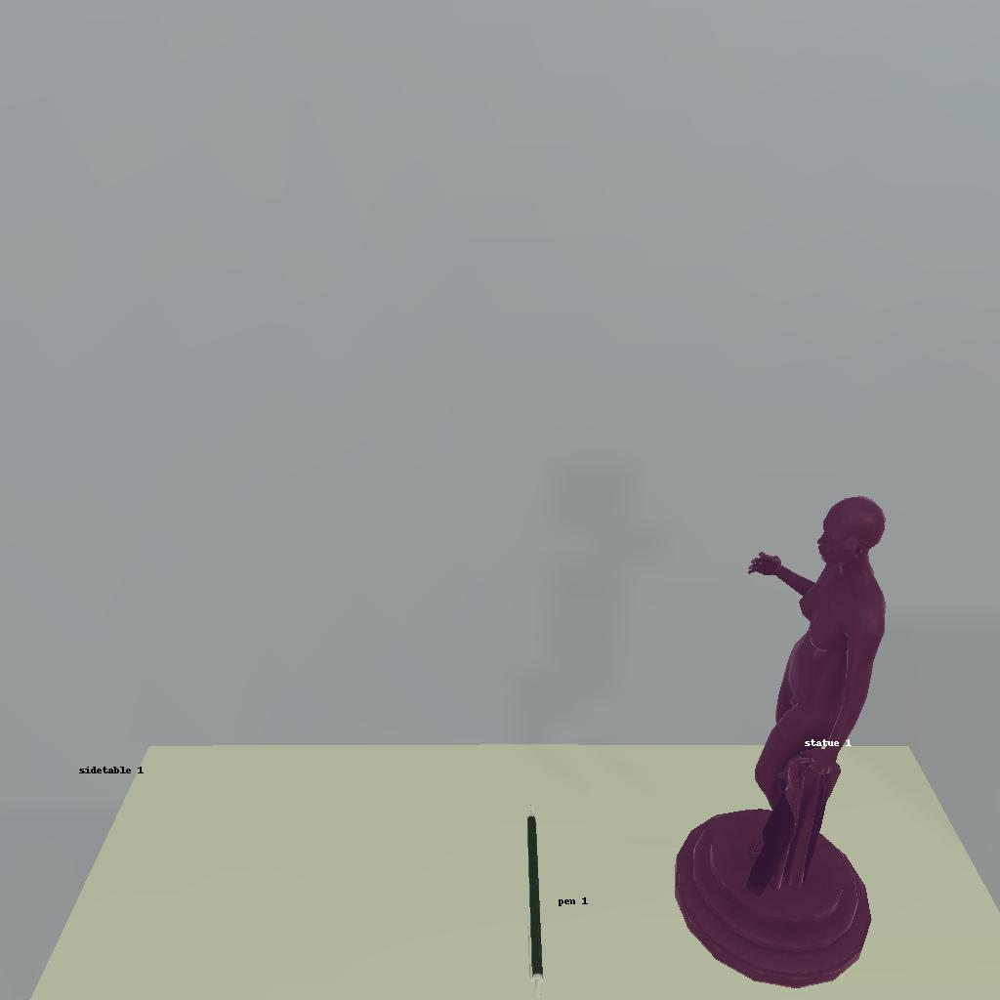
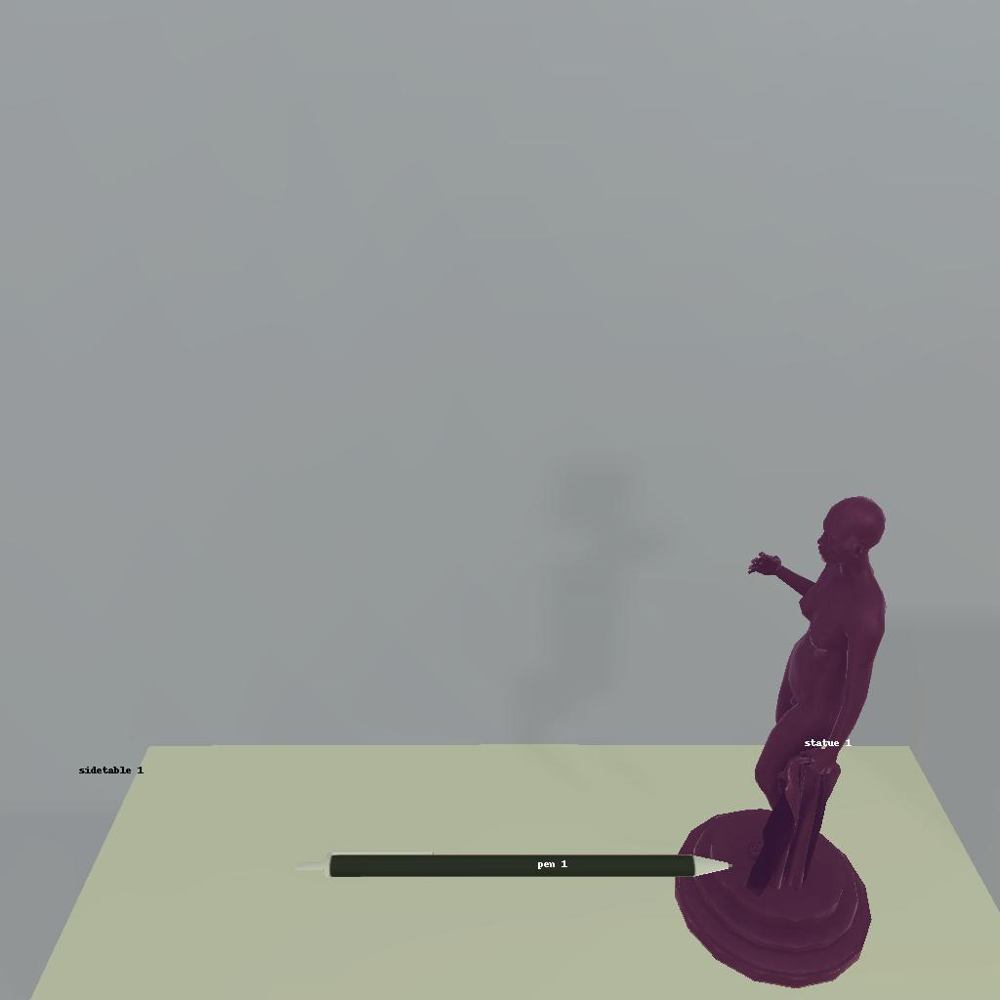

---------------------------------------------------------task: 4---------------------------------------------------------
--------------------------------------------------------------------------------------------------------------------------------------------------------------------
--------------------------------------------------------------------------------------------------------------------------------------------------------------------
Step:--------------------------------------------------------------------------19-------------------------------------------------------------------------------
----------------------------------------
VLM Prompt:
Image1:
Image2:
Image3:
**Instruction**
1. Analyze the provided image to identify all visible household objects, focusing on those relevant to the task description "look at statue under the floorlamp."
2. Use the analysis of the image and the task hint "The agent must find an object of the desired type, locate and turn on a light source with the desired object in-hand." to answer the question: what is the most reasonable action in the choices for the task description "look at statue under the floorlamp"?
4. Decide and write the answer using the template: The answer is: (i): , where i is the real number. If there is no desired object in the image, search every place based on **Initial Observation** to find the object. And if no one is exactly correct, choose a similar answer.
**Initial Observation**
You are in the middle of a room. Looking quickly around you, you can see armchair (1), coffeetable (1-2), sidetable (1), garbagecan (1), drawer (1), sofa (1), diningtable (1)
**Answer Choices**
(1): go to armchair 1
(2): go to coffeetable 1
(3): go to garbagecan 1
(4): go to drawer 1
(5): go to sofa 1
(6): go to coffeetable 2
(7): go to diningtable 1
(8): take statue 1 from sidetable 1
**Answer**
Let's think step by step by following the instructions.
----------------------------------------
----------------------------------------
Original Response:
The answer is: (8): take statue 1 from sidetable 1
----------------------------------------
----------------------------------------
>>> Refine Original VLM Response and Get Pure Action: take statue 1 from sidetable 1
----------------------------------------
-----------------------------------------------------------------
Running time: 4.131680011749268 seconds
Total Money: 2.3740199999999994
-----------------------------------------------------------------
-----------------------------------------------------------------
Text Observation:You pick up the statue 1 from the sidetable 1.
-----------------------------------------------------------------
UNSUCCEED